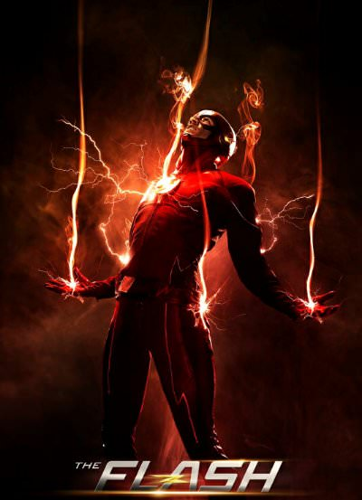

25 Years Letter - Flash Still Missing
By: Iris West-Allen
Sunday, April 25, 2049,
It was a beautiful morning in Central City. Not so different from that morning years ago when the clear blue sky turned crimson red, and the Scarlet Speedster vanished in a crisis. Thousands gathered here at the Flash Museum to commemorate that day’s quarter-century anniversary. Names were read of other victims of the attack, and Governor Singh gave remarks on the Flash’s enduring legacy. The details of Flash’s disappearance remain murky. A 2026 congressional commission repeated the Citizen’s initial reporting. Hours after the sky turned red, the Flash and his allies fought the Reverse Flash. The ensuing street battle caused the most destruction this city had ever seen. It was not until the Flash and the Reverse Flash disappeared in an explosion of light that the chaos ceased. But in the years following the crisis, accounts only grew more contradictory. Some eyewitnesses remember dozens of other heroes present, including Green Arrow, Batwoman and Elongated Man. Others remember heroes thought lost in time, like the Atom, or from other worlds, like Supergirl. Some even contend they saw Reverse-Flash leading an army of “shadow demons.” Scientists at Ivy University’s Memory institute chalk up…… — Research had focused on Roger Hayden, a.k.a. Psycho Pirate, who claims to remember the night’s true events. He said upon his arrest, “Worlds lived, worlds died. Nothing will ever be the same.” And nothing ever was. Staring up at the golden statue of the Flash, this reporter remembered the words of former Police Chief Joe West: “We don’t have many details. What we do know tonight is Central City’s greatest protector vanished in a flash. I only hope he returns just as……